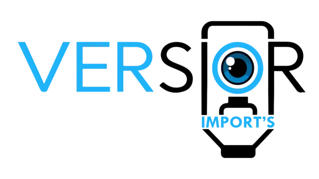
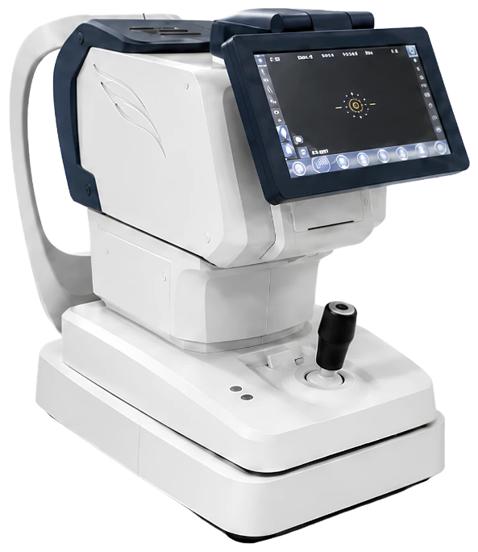
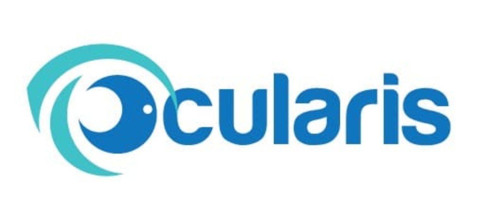
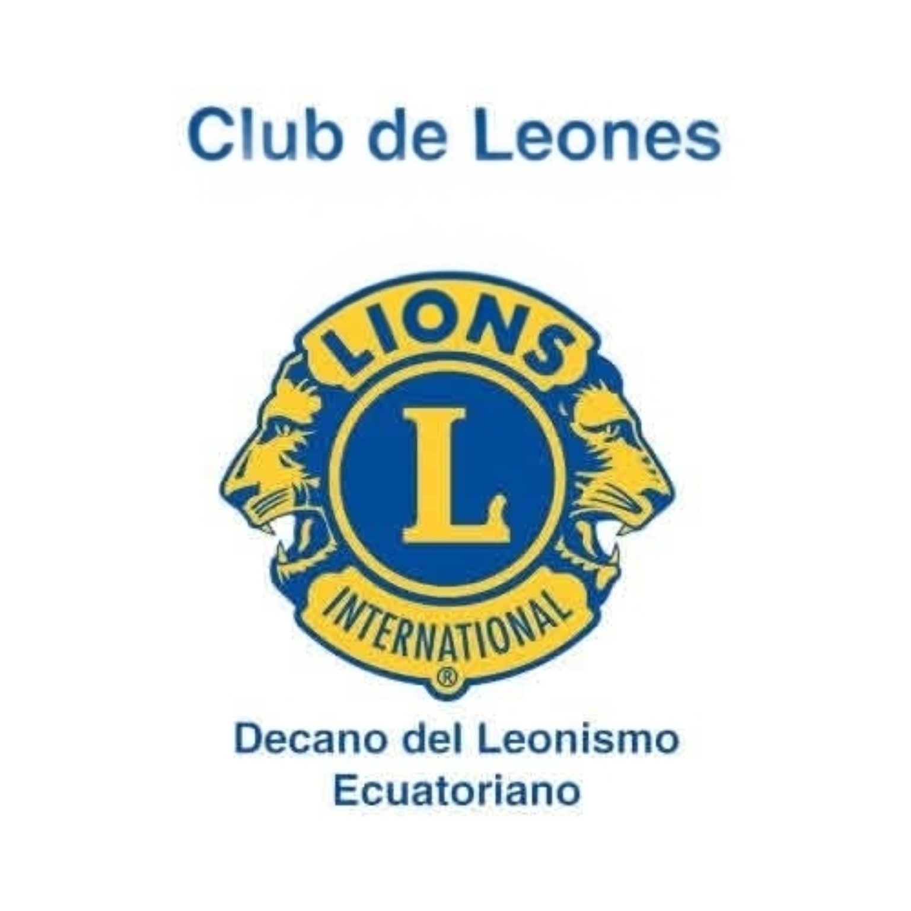
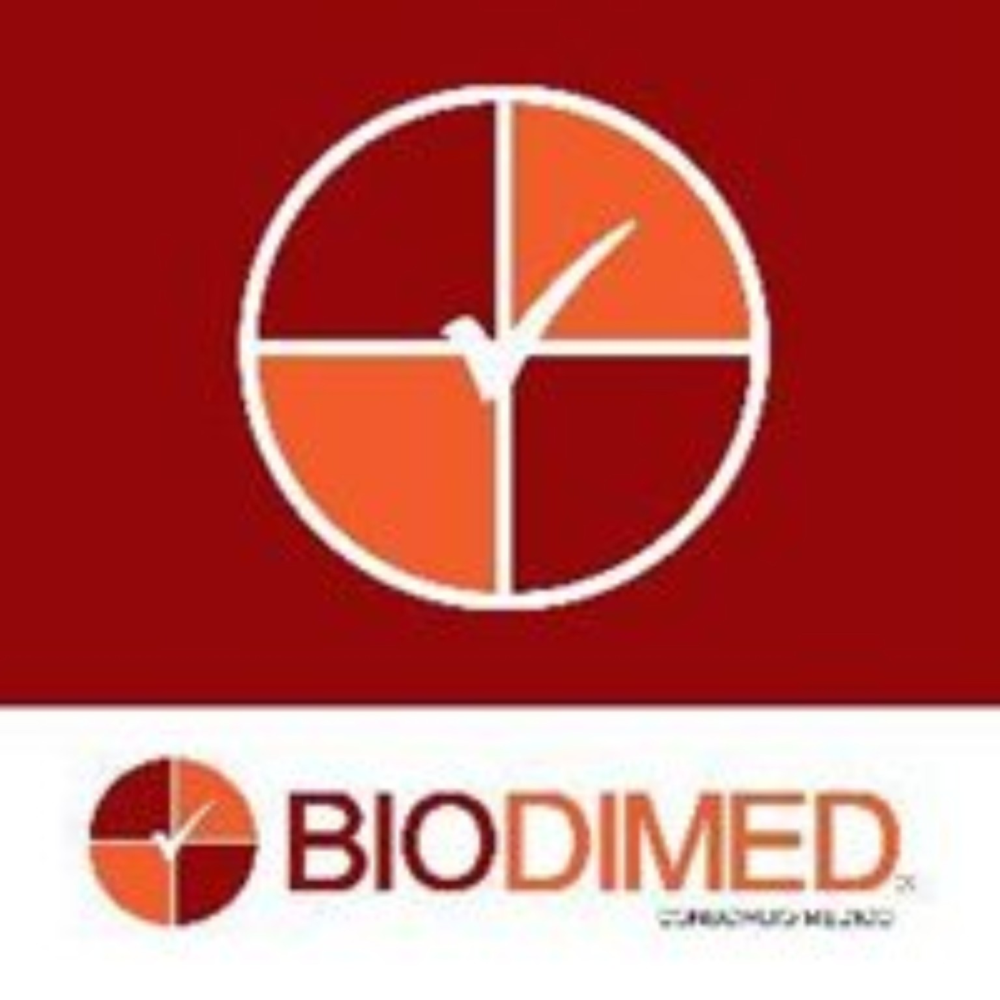
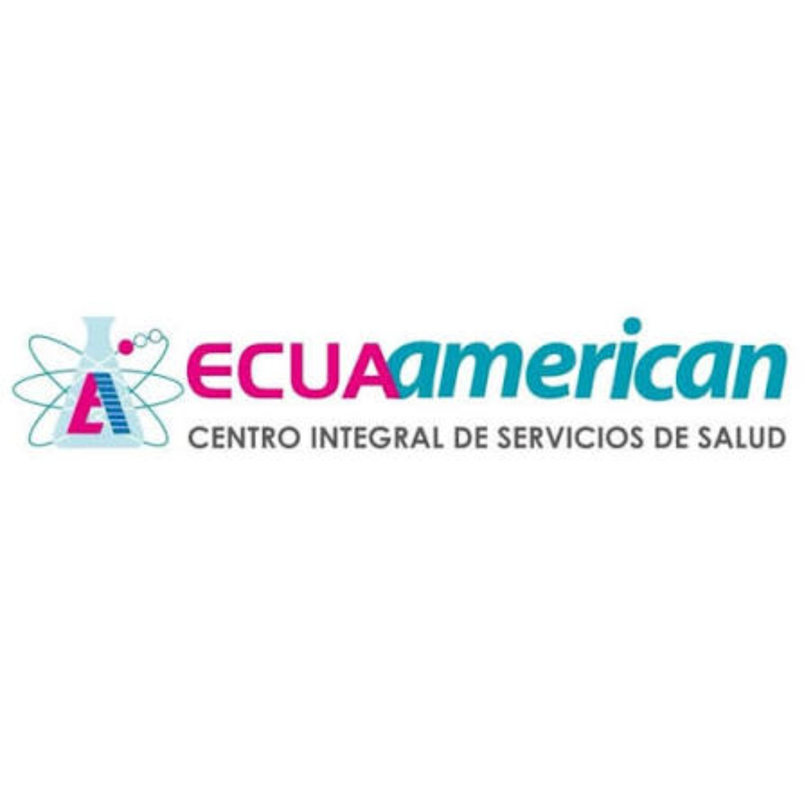

Visión
Una idea que
mira más lejos.
Todo empieza con tu visión de cómo quieres atender. Te acompañamos para convertir esa idea en una óptica o consultorio que refleje tu forma de trabajar.

Salud visual · Ecuador HablemosTecnología optométrica y oftalmológica
Equipos, diseño de ópticas y respaldo profesional.
Tu visión, acompañada en cada paso.

Acercamos tecnología, conocimiento y acompañamiento a quienes cuidan la visión de las personas.
Visión
Todo empieza con tu visión de cómo quieres atender. Te acompañamos para convertir esa idea en una óptica o consultorio que refleje tu forma de trabajar.
Cuidar la vista
Desde la prueba de agudeza visual hasta el examen con lámpara de hendidura, cada observación te ayuda a conocer mejor la salud visual de tus pacientes.
Tecnología
Acercamos equipos de refracción y diagnóstico con capacitación para que puedas incorporarlos al trabajo diario de tu equipo.
Refracción
Tu consulta merece herramientas a la altura de tu trabajo. Encuentra tecnología de refracción con acompañamiento para elegir y aprovechar tu equipo.
Cada lente cuenta
Del equipo a tu rutina: tecnología, capacitación y respaldo para acompañar el trabajo de tu óptica.
Tu espacio de trabajo
Una mesa de trabajo y una unidad clínica que se integran a tu espacio. Equipa tu consulta pensando en tu equipo y en las personas que atiendes.
Potencia tu negocio
Equipa o remodela tu espacio con asesoría, instalación y soporte posventa para que tu negocio siga avanzando después de la compra.
Hablemos de tu ópticaDe la refracción al diagnóstico.
Explora las soluciones para tu práctica.
Desliza para explorar la colección
02 / Un espacio a la altura de tu visión
La tecnología importa.
El lugar donde cobra vida, también.
Diseñamos espacios ópticos funcionales, cómodos y coherentes con tu marca. Construcción y remodelación, con acompañamiento profesional.
Hablemos de tu ópticaNo estás comprando a una pantalla.
Hay un equipo detrás de cada paso.
Dra. Oftalmóloga · Capacitación de equipos y personal.
Aprender con JulietaLicenciado · Soporte de marca y acompañamiento.
Hablar con AlexanderDe nuestras ventas. Para abrir oportunidades.
Destinamos el 2 % de nuestras ventas a realizar misiones y obras sociales en beneficio de personas de escasos recursos.
Porque avanzar también es ayudar a otros a ver un futuro mejor.
Importar y comercializar tecnología optométrica y oftalmológica accesible, complementándola con capacitación profesional, asesoría en la creación de espacios ópticos y acompañamiento posventa, para impulsar el crecimiento y la excelencia de los profesionales de la salud visual.
Ser la empresa referente en Ecuador en soluciones integrales para la salud visual, reconocida por combinar tecnología especializada, capacitación de alto nivel y acompañamiento estratégico para el desarrollo de ópticas y consultorios modernos.
Relaciones que nos inspiran a seguir




Cuéntanos qué imaginas para tu práctica.
Vamos a construir el siguiente paso contigo.
Calle Giovani Calles y Palermo,
urbanización UTE · Pichincha, Quito
El Morlán y De los Álamos,
barrio Damer II · Quito
Av. Mariscal Sucre y Benjamín Ochoa,
esquina · Biblián